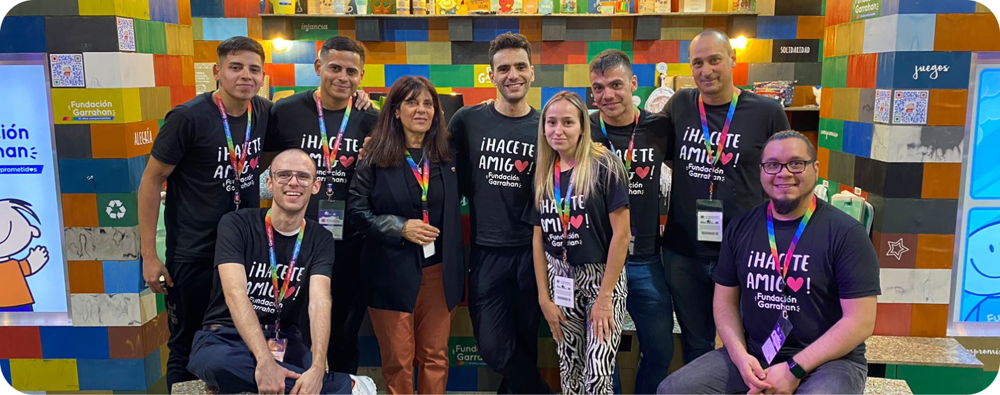

“El mundo puede iluminarse por la solidaridad...”
La Fundación Garrahan es una entidad de la sociedad civil cuya misión es alentar en todos los aspectos el desarrollo del hospital de pediatría Prof. Dr. Juan P. Garrahan. Fue inaugurada el 21 de marzo de 1988. Su objetivo principal es el apoyo permanente tanto a las actividades asistenciales como a las de docencia e investigación. Asimismo, esta Fundación presta atención a las necesidades sociales de los pequeños pacientes y sus familias, preferentemente a los más necesitados. El cumplimiento de su misión se realizará a través de distintos programas que articulan la participación comunitaria.

Fundación Garrahan en la Feria del Libro
Docencia e investigación
La Fundación apoya las actividades de docencia e investigación. Sus planes desde formación y actualización científica están dirigidos a todos los integrantes del equipo de salud.
- Programas de becas de capacitación e investigación.
- Organización de congresos, seminarios, jornadas y simposis científicos.
- Programa de Capacitación a Distancia (PROCAD): Formar y capacitar recursos humanos, cuando existen dificultades de acceso a la actualización de conocimientos científicos.
- Edición de la revista de Medicina Infantil.
- Publicación de libros, normas y videos.
- Gestión de suscripciones bibliográficas a nivel nacional e internacional.
¿En qué invierte sus ingresos la Fundación?
- Compra de insumos y equipamiento médico avanzado.
- Formación y capacitación de médicos, enfermeras y demás integrantes del equipo de salud.
- Funcionamientos y sostén de Casa Garrahan.
- Financiamiento de diversos programas: Docencia e investigación, biblioteca, editorial, escuela hospitalaria y equipamiento informático.
- Ayuda social a niños carentes de recursos.
- Mantenimiento edilicio.